에너지관리기사 (2008-09-07 기출문제)
1과목: 연소공학
1. 석탄 연소시 발생하는 버드네스트(birdnest)현상은 어느 전열면에서 가장 많은 피해를 일으키는가?
- 과열기
- 공기예열기
- 급수예열기
- 화격자
(정답률: 96%)

2. 어떤 기체연료 1Nm3의 고위 발열량이 14160kcal/Nm3이고 질량이 2.59kg이었다. 다음 중 이 기체는?
- 메탄
- 에탄
- 프로판
- 부탄
(정답률: 57%)
3. 다음 중 이론공기량의 정의로 옳은 것은?
- 연소장치의 공급 가능한 최대의 공기량
- 단위량의 연료를 완전연소시키는데 필요한 최대의 공기량
- 단위량의 연료를 완전연소시키는데 필요한 최소의 공기량
- 단위량의 연료를 지속적으로 연소시키는데 필요한 최소의 공기량
(정답률: 75%)
4. 연료 중에 회분이 많을 경우 연소에 미치는 영향으로 옳은 것은?
- 발열량이 증가한다.
- 연소상태가 고르게 된다.
- 클링커의 발생으로 통풍을 방해한다.
- 완전연소되어 잔류물을 남기지 않는다.
(정답률: 87%)
5. 다음 중 연소효율(ηc)을 옳게 나타낸 식은? (단, HL : 저위발열량, Li : 불완전연소에 따른 손실열, Lc : 탄찌꺼기속의 미연탄소분에 의한 손실열이다.)
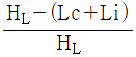
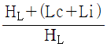
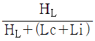
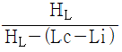
(정답률: 87%)
6. 다음 연소에 대한 설명 중 틀린 것은?
- 연소의 목적은 연소에 의해 생기는 열을 이용하는 것이다.
- 연료의 성분은 주로 탄소와 수소이며 공기 중의 산소와 반응한다.
- 연소가 일어나기 위해서는 착화온도 이하에서 충분한 산소의 공급이 있어야 한다.
- 가연물질이 공기 중의 산소와 반응을 일으키며 산화열을 발생시키는 현상을 연소라 한다.
(정답률: 96%)
7. 질소산화물을 경감시키는 방법으로 틀린 것은?
- 과잉공기량을 감소시킨다.
- 연소온도를 낮게 유지한다.
- 로내가스의 잔류시간을 늘려준다.
- 질소성분을 함유하지 않은 연료를 사용한다.
(정답률: 69%)
8. 가솔린기관 내의 연소와 같이 간헐적인 연소를 일정주기 반복하여 연소시키는 방식은?
- Pulse 연소
- EGR 연소
- Blast 연소
- Slit 연소
(정답률: 60%)
9. 기체연료가 다른 연료에 비하여 연소용 공기가 적게 소요되는 가장 큰 이유는?
- 인화가 용이하므로
- 착화온도가 낮으므로
- 열전도도가 크므로
- 확산연소가 되므로
(정답률: 100%)
10. 옥탄(C8H18)이 연소할 때 이론적인 공기와 연료의 질량비는 약 얼마인가? (단, 공기의 분자량은 29, 공기 중의 산소는 21v%이다.)
- 1:1
- 3:1
- 15:1
- 47:1
(정답률: 61%)
11. 연소가스를 분석한 결과 CO2 가 12.5%, O2가 3.0%일 때 (CO2)MAX%은?
- 12.62
- 13.45
- 14.58
- 15.03
(정답률: 66%)
12. 전기식 집진장치에 대한 설명 중 틀린 것은?
- 포집입자의 직경은 30~50μm 정도이다.
- 집진효율이 커서 9~99.9% 에 이른다.
- 광범위한 온도범위에서 설계가 가능하다.
- 낮은 압력손실로 대량의 가스처리가 가능하다.
(정답률: 89%)
13. 다음 기체연료에 대한 설명 중 가장 거리가 먼 것은?
- 회분 및 유해물질의 배출량이 적다.
- 연소조절 및 점화, 소화가 용이하다.
- 인화의 위험성이 적고 연소장치가 간단하다.
- 하나의 가스원으로 가수의 연소장치에 쉽게 공급할 수 있다.
(정답률: 80%)
14. 다음 조성의 액체연료를 완전연소시키기 위해 필요한 이론공기량은 약 몇 Nm/3kg인가?
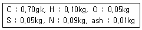
- 8.9
- 11.5
- 15.7
- 18.9
(정답률: 62%)
15. 유효 굴뚝높이(He)와 지표상의 최고농도(Cmax)와의 관계에 있어서 일반적으로 He가 2배가 될 때 Cmax는?
- 2배
- 4배
- 1/2
- 1/4
(정답률: 43%)
16. 다음 중 고체나 액체 연료의 성분에 소량 함유되어 있고, 연소된 물질은 유독성 물질로 철판 부식 및 대기오염의 원인이 되는 성분은?
- 탄소
- 수소
- 황
- 질소
(정답률: 85%)
17. 다음 연료 성분 중 가연성분이 아닌 것은?
- 탄소
- 수소
- 황
- 수분
(정답률: 89%)
18. 대기오염 방지를 위한 집진장치 중 습식집진잦ㅇ치에 해당하지 않는 것은?
- 백필터
- 충전탑
- 벤츄리 스크러버
- 사이클론 스크러버
(정답률: 83%)
19. 공기비 2.3으로 연소시키는 석탄연소로에서 실제공기량이 11.96Nm3/kg일 때 이론공기량은 약 몇 Nm3/kg인가?
- 5.2
- 10.4
- 13.8
- 27.5
(정답률: 50%)
20. B 중유 5kg을 완전연소시켰을 때 저위발열량은 약 몇 kcal/인가? (단, B중유의 고위발열량은 10000kcal/kg, 중유 1kg에는 수소 H는 0.2kg, 수증기 W는 0.1kg 함유되어 있다.)
- 14300
- 24300
- 34300
- 44300
(정답률: 32%)
2과목: 열역학
21. 다음 그림은 Otto cycle의 P-V 도표를 나타낸 것이다. 이중 일(work) 생산과정에 해당하는 것은?
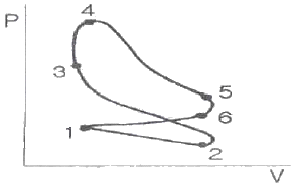
- 2→3
- 3→4
- 4→5
- 5→6
(정답률: 53%)
22. 20MPa, 0℃의 공기를 100kPa로 줄-톰슨 팽창시켰을 때의 온도는 약 몇 ℃인가? (단, 엔탈피는 20MPa, 0℃에서 439kJ/kg, 100kPam 0℃에서 485kJ/kg이고, 압력이 100kPa인 등압과정에서 평균비열은 1.0kJ/kgㆍ℃이다.)
- -11
- -22
- -36
- -46
(정답률: 24%)
23. 20℃, 100kPa에서 상대습도가 80%인 공기의 몰습도는 약 얼마인가? (단, 20℃에서 물의 포화증기압은 2.3kPa이다.)
- 0.019
- 0.023
- 0.035
- 0.041
(정답률: 34%)
24. 다음 중 세기성질(intensive property)이 아닌 것은?
- 압력
- 밀도
- 비체적
- 체적
(정답률: 32%)
25. 1mol의 이상기체가 25℃, 2MPa로부터 100kPa 까지 단열가역적으로 팽창하였을 때 최종온도는 약 몇 K인가? (단, 정적비열 Cv는 3/2R이다.)
- 90
- 80
- 70
- 60
(정답률: 31%)
26. 다솔린 기관의 이론 표준사이클인 오토사이클(Otto cucle)에 대한 설명 중 옳은 설명을 모두 나타낸 것은?
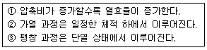
- ①, ②
- ①, ③
- ②, ③
- ①, ②, ③
(정답률: 39%)
27. 물에 대한 다음 설명 중 틀린 것은?
- 물은 4℃ 부근에서 비체적이 최대가 된다.
- 물이 얼어 고체가 되면 밀도가 감소한다.
- 임계온도보다 높은 온도에서는 액상과 기상을 구분할 수 없다.
- 액체상태의 물을 가열하여 온도가 상승하는 경우, 이 때 공급한 열을 현열이라고 한다.
(정답률: 77%)
28. 그림은 Carnot 냉동사이클을 나타낸 것이다. 성능계수를 옳게 표현한 것은?
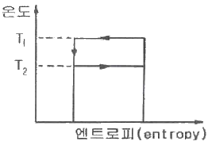
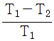
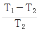
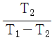
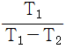
(정답률: 50%)
29. 냉동사이클에서 냉매의 구비조건으로 가장 거리가 먼 것은?
- 임계온도가 높을 것
- 증발열이 클 것
- 인화 및 폭발의 위험성이 낮을 것
- 저온, 저압에서 응축이 되지 않을 것
(정답률: 53%)
30. 80℃의 물 50kg과 50℃의 물 100kg을 혼합한 물의 온도는 몇 ℃인가?
- 50
- 60
- 70
- 80
(정답률: 45%)
31. 실린더 내에 있는 17℃의 공기 1kg을 등온압축할 때 냉각된 열량이 134kJ 이라면 공기의 최종 체적은 초기체적을 V라 할 때 얼마가 되는가? (단, 이 과정은 이상기체의 가역과정이며, 공기의 기체 상수는 0.287kJ/kgㆍK이다.)
- 1/2V
- 1/5V
- 1/7V
- 1/9V
(정답률: 43%)
32. 다음 카르노사이클 그림에서 열의 방출은 어느 변화에서 일어나는가?
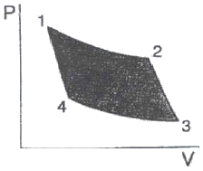
- 1→2
- 2→3
- 3→4
- 4→1
(정답률: 43%)
33. 노점온도(dew temperature)를 가장 옳게 설명한 것은?
- 공기, 수증기의 혼합물에서 수증기의 분압에 대한 수증기 과열상태 온도
- 공기, 가스의 혼합물에서 가스의 분압에 대한 가스의 과냉상태 온도
- 공기, 수증기의 혼합물을 가열시켰을 때 증기가 없어지는 온도
- 공기, 수증기의 혼합물에서 수증기의 분압에 해당하는 수증기의 포화온도
(정답률: 75%)
34. 60℃의 물 200kg과 100℃의 포화증기를 적당량 혼합하여 90℃의 물이 되었을 때 혼합하여야 할 포화증기의 양은 약 몇 kg인가? (단, 물의 비열은 4.18kJ/kgㆍK이며, 100℃에서의 증발잠열은 2257kJ/kg이다.)
- 2.5
- 10.9
- 28.2
- 66.7
(정답률: 53%)
35. 기체 2kg을 압력이 일정한 과정으로 50℃에서 150℃로 가열할 때, 필요한 열량은 몇 kJ인가? (단, 이 기체의 정적비열은 3.1kJ/kgㆍK이고 기체상수는 2.1kJ/kgㆍK이다.)
- 210
- 310
- 620
- 1040
(정답률: 35%)
36. 온도가 800K이고 질량이 10kg인 구리를 온도 290K인 100kg의 물속에 넣었을 때 이 계 전체의 엔트로피 변화는 몇 kJ/K인가? (단, 구리와 물의 비열은 각각 0.398kJ/kgㆍK, 4.185kJ/kgㆍK이고, 물은 단열된 용기에 담겨있다.)
- -3.973
- 2.897
- 4.424
- 6.870
(정답률: 43%)
37. 폴리트로픽 과정에서 폴리트로픽 지수 n과 관련하여 옳은 것은? (단, k는 비열비이다.)
- n = ∞ : 단열과정
- n = 0 : 정압과정
- n = k : 등온과정
- n = 1 : 등엔트로피과정
(정답률: 62%)
38. 물체 A와 B가 각각 물체 C와 열평형을 이루었다면 A와 B도 서로 열평형을 이룬다는 열역학 법칙은?
- 제0법칙
- 제1법칙
- 제2법칙
- 제3법칙
(정답률: 75%)
39. 다음 중 표준냉동사이클에서의 냉동능력이 가장 좋은 냉매는?
- 암모니아
- R-12
- R-22
- R-113
(정답률: 72%)
40. 이상적인 단순 랭킨사이클로 작동되는 증기원동소에서 펌프입구, 보일러 입구, 터빈 입구, 응축기 입구의 비엔탈피를 각각 h1, h2, h3, h4라고 할 때 열효율은?
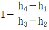
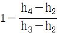
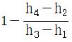
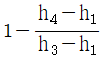
(정답률: 70%)
3과목: 계측방법
41. 전자유량계의 특징에 대한 설명 중 틀린 것은?
- 압력손실이 거의 없다.
- 내식성 유지가 곤란하다.
- 전도성 액체에 한하여 사용할 수 있다.
- 미소한 측정전압에 대하여 고성능 증폭기를 필요로 한다.
(정답률: 58%)
42. U자관 압력계에 관한 설명으로 틀린 것은?
- 관 속에 수은, 물 등을 넣고 한 쪽 끝에 측정 압력을 도입하여 압력을 측정한다.
- 차압을 측정할 경우에는 한 쪽 끝에만 압력을 가한다.
- 측정시 메니스커스, 모세관현상 등의 영향을 받으므로 이에 대한 보정이 필요하다.
- U자관 크기는 특수한 용도를 제외하고는 보통 2m 정도의 것이 한도이다.
(정답률: 57%)
43. 다음 중 직접식 액위계에 해당하는 것은?
- 플로트식
- 초음파식
- 방사선식
- 정전용량식
(정답률: 77%)
44. 제어량에 편차가 생겼을 경우 편차의 적분차를 가감해서 조작량의 이동속도가 비례하는 동작으로서 잔류편차가 제어되나 제어의 안정성은 떨어지는 특징을 가진 동작은?
- 비례동작
- 적분동작
- 미분동작
- 비례적분동작
(정답률: 42%)
45. 응답이 빠르고 감도가 높으며, 도선저항에 의한 오차를 작게 할 수 있으나 특성을 고르게 얻기가 어려우며, 흡습 등으로 열화되기 쉬운 특징을 가진 온도계는?
- 광고온계
- 열전대 온도계
- 서미스터 저항체 온도계
- 금속측온 저항체 온도계
(정답률: 61%)
46. 제어시스템에서 제어결과가 그림과 같은 동작은?
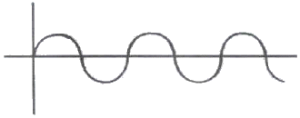
- ON-OFF동작
- 비례동작
- 적분동작
- 미분동작
(정답률: 71%)
47. 가스크로마토그래피법에서 사용하는 검출기 중 수소염 이온화검출기를 의미하는 것은?
- ECD
- FID
- HCD
- FTD
(정답률: 81%)
48. 압력계의 게이지압력과 절대압력에 관한 식을 표시한 것으로 옳은 것은? (단, 게이지압력은 A, 절대압력은 B, 대기압은 C이다.)
- B=C÷A
- B=C×A
- B=A-C
- B=A+C
(정답률: 67%)
49. 시료 가스 중의 CO2, 탄화수소, 산소, CO 및 질소 성분을 분석할 수 있는 방법으로 흡수법 및 연소법의 조합인 분석법은?
- 분젠-씨링법
- 헴펠(Hempel)식 분석법
- Junkers식 분석방법
- 오르자트(orsat) 분석법
(정답률: 61%)
50. 가스 분석계의 측정법 중 전기적 성질을 이용한 것은?
- 세라믹식 측정방법
- 연소열식 측정방법
- 자동 오르자트법
- 가스크로마토그래피법
(정답률: 39%)
51. 광고온계의 특징에 대한 설명으로 옳은 것은?
- 고온에서 방사되는 에너지 중 가시광선을 이용한다.
- 넓은 측정온도(0~3000℃) 범위를 갖는다.
- 측정이 자동적으로 이루어져 개인오차가 발생하지 않는다.
- 방사온도계에 비하여 방사율에 대한 보정량이 크다.
(정답률: 34%)
52. 전기저항식 온도계 중 백금(Pt) 측온 저항체에 대한 설명으로 틀린 것은?
- 0℃에서 500Ω을 표준으로 한다.
- 측정온도는 최고 500℃ 정도이다.
- 저항온도계수는 작으나 안정성이 좋다.
- 온도 측정시 시간 지연의 결점이 있다.
(정답률: 65%)
53. 자동제어의 일반적인 동작순서로 옳은 것은?
- 검출→판단→비교→조작
- 검출→비교→판단→조작
- 비교→검출→판단→조작
- 비교→판단→검출→조작
(정답률: 64%)
54. 제어시스템에서 응답이 계단변화가 도입된 후에 얻게 될 최종적인 값을 얼마나 초과하게 되는지를 나타내는 척도는?
- 오프셋
- 응답시간
- 오버슈트
- 쇠퇴비
(정답률: 75%)
55. 다음 중 압전효과를 이용한 압력계?
- 액주형 압력계
- 아네로이드 압력계
- 박막식 압력계
- 스트레인게이지식 압력계
(정답률: 69%)
56. 진동ㆍ충격의 영향이 적고, 미소차압의 측정이 가능하며 저압가스의 유량을 측정하는데 주로 사용되는 압력계는?
- 압전식 압력계
- 브르동관식 압력계
- 침종식 압력계
- 분동식 압력계
(정답률: 27%)
57. 물체의 형상변화를 이용하여 온도를 측정하는 온도계는?
- 저항온도계
- 광고온계
- 제겔콘
- 열전대온도계
(정답률: 58%)
58. 다음 계측기 중 열관리용에 사용되지 않는 것은?
- 유량계
- 온도계
- 브르동관 압력계
- 다이얼 게이지
(정답률: 74%)
59. 다음 중 세라믹(ceramic)식 O2계의 세라믹 주원료는?
- Cr2O3
- Pb
- P2O5
- ZrO2
(정답률: 67%)
60. 다음 중 비접촉식 온도계가 아닌 것은?
- 서미스터온도계
- 광고온계
- 방사온도계
- 색온도계
(정답률: 59%)
4과목: 열설비재료 및 관계법규
61. 에너지사용량이 대통령령이 정하는 기준량 이상이 되는 에너지다소비사업자는 전년도의 에너지사용량ㆍ제품생산량등의 사항을 언제까지 신고하여야 하는가?
- 매년 1월 31일
- 매년 3월 31일
- 매년 6월 30일
- 매년 12월 31일
(정답률: 73%)
62. 지식경제부령이 정하는 열사용기자재(특정열사용기자재)의 시공업을 하는 자는 어떤 법령에 근거하여 누구에게 등록을 하여야 하는가?
- 건설산업기본법, 시ㆍ도지사에게
- 건설기술관리법, 시장ㆍ구청장에게
- 건설산업기본법, 교육과학기술부장관에게
- 건설기술관리법, 지식경제부장관에게
(정답률: 70%)
63. 산(酸) 등의 화학약품을 차단하는데 사용하는 밸브로서 내약품성, 내열성의 고무로 만든 것을 밸브시트에 밀어 유량을 조절하는 밸브는?
- 다이어프램밸브
- 슬로우스밸브
- 버터플라이밸브
- 체크밸브
(정답률: 78%)
64. 다음 중 배소(roasting)에 대한 설명으로 틀린 것은?
- 화합수와 탄산염을 분해한다.
- 황, 인 등의 유해성분을 제거한다.
- 산화배소는 일반적으로 흡열반응이다.
- 산화도를 변화시켜 자력선광을 할 수 있도록 한다.
(정답률: 55%)
65. 보온재의 열전도율에 영향을 미치는 인자로서 가장 거리가 먼 것은?
- 외부온도
- 보온재의 밀도
- 함유수분
- 외부압력
(정답률: 64%)
66. 연료를 사용하지 않고 용선의 보유열과 용선속의 불순물의 산화열에 의해서 노내 온도를 유지하면서 용강을 얻는 것은?
- 평로
- 고로
- 반사로
- 전로
(정답률: 65%)
67. 에너지사용자가 수립하여야 할 자발적협약이행계획에 포함될 사항이 아닌 것은?
- 이산화탄소배출감소목표
- 에너지관리체제 및 관리방법
- 전년도의 에너지사용량ㆍ제품생산량
- 효율향상목표 등의 이행을 위한 투자계획
(정답률: 44%)
68. 샤모트(chamotte) 벽돌에 대한 설명으로 옳은 것은?
- 일반적으로 기공률이 크고 비교적 낮은 온도에서 연화되며, 내스폴링성이 좋다.
- 흑연질 등을 사용하면 내화도와 하중연화점이 높고 열 및 전기전도도가 크다.
- 내식성과 내마모성이 크며 내화도는 SK 35이상으로 주로 고온부에 사용된다.
- 하중 연화점이 높고 가소성이 커 염기성 제강로에 주로 사용된다.
(정답률: 50%)
69. 에너지이용 합리화 기본계획 내용이 아닌 것은?(오류 신고가 접수된 문제입니다. 반드시 정답과 해설을 확인하시기 바랍니다.)
- 에너지 이용 효율의 증대
- 열사용 기자재 안전관리
- 에너지 소비 최대화를 위한 경제구조로의 전환
- 에너지원간 대체
(정답률: 0%)
70. 다음 중 개조검사를 받아야 하는 경우가 아닌 것은?
- 증기보일러를 온수보일러로 개조하는 경우
- 보일러의 섹션 증감에 의해 용량을 변경하는 경우
- 보일러의 수관과 연관을 교체하는 경우
- 연료 또는 연소방법을 변경하는 경우
(정답률: 43%)
71. 다음 중 터널요의 구성 부분이 아닌 것은?
- 예열대
- 소성대
- 소둔대
- 냉각대
(정답률: 76%)
72. 다음 중 에너지 저장의무 부과대상자가 아닌 것은?
- 전기사업자
- 석탄생산자
- 석유정제업자
- 연간 2만석유환산톤 이상의 에너지를 사용하는 자
(정답률: 30%)
73. 다음 중 작업이 간편하고 조업주기가 단축되며 요체의 보유열을 이용할 수 있어 경제적인 반연속식 요는?
- 셔틀요
- 윤요
- 터널요
- 도염식요
(정답률: 60%)
74. 압력용기 및 철금속가열로에 대한 계속사용검사 중 재사용검사의 유효기간은?
- 6개월
- 1년
- 2년
- 3년
(정답률: 53%)
75. 전기와 열의 양도체로서 내식성, 굴곡성이 우수하고 내압성도 있어 열교환기의 내관(tube) 및 화학공업용으로 사용되는 관(pipe)은?
- 주철관
- 강관
- 알루미늄관
- 동관
(정답률: 91%)
76. 다음 은 요로의 정의에 대한 설명이다. ()안 ①~④에 들어갈 용어로서 틀린 것은?
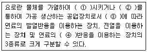
- ① - 용융
- ② - 소성
- ③ - 열원
- ④ - 산화
(정답률: 75%)
77. 노재의 성분에 의한 분류 중 산성내화물에 속하는 것은?
- 규석질
- 크롬질
- 탄소질
- 마그네시아질
(정답률: 60%)
78. 물체의 나면(懶眠) 및 보온면으로부터 방산열량이 각각 147kJ/m2, 48J/m2일 때 이 보온재의 보온효율은?
- 27%
- 54%
- 67%
- 76%
(정답률: 47%)
79. 보온재로서 구비하여야 할 일반적인 조건이 아닌 것은?
- 불연성일 것
- 비중이 작을 것
- 열전도율이 클 것
- 어느 정도의 강도가 있을 것
(정답률: 74%)
80. 염기성내화벽돌에서 공통적으로 일어날 수 있는 현상은?
- 스폴링(spalling)
- 슬래킹(slaking)
- 더스팅(dusting)
- 스웰링(swelling)
(정답률: 61%)
5과목: 열설비설계
81. 열교환기에서 입구ㆍ출구의 대수평균온도차가 300℃, 열관류율이 15kcal/m2ㆍhㆍ℃, 전열면적이 8m2일 때 전열량은 몇 kcal/h인가?
- 16000
- 26000
- 36000
- 46000
(정답률: 55%)
82. 보일러 1마력을 상당 증발량으로 환산하면 약 몇 kg/h가 되는가?
- 3.⑤
- 15.65
- 30.⑤
- 34.55
(정답률: 83%)
83. 노통연관 보일러의 노통 바깥면과 이것에 가장 가까운 연관의 면과는 몇 mm 이상의 틈새를 두어야 하는가?
- 30
- 50
- 60
- 100
(정답률: 57%)
84. “어떤 주어진 온도에서 최대 복사강도에서의 파장 λmax는 절대온도에 반비례한다.“는 법칙은?
- Wien의 법칙
- Planck의 법칙
- Fourier의 법칙
- Stefan-Boltzmann
(정답률: 63%)
85. 비중량이 0.3kg/m3인 연소가스가 연돌높이 20m를 지나 외기온도 210℃인 대기로 방출될 때, 이론 통풍력은 약 몇 kg/m2인가? (단, 1atm은 10332kg/m2이고, 대기의 R값은 29.27m/k이다.)
- 9
- 12
- 15
- 18
(정답률: 22%)
86. 긴 관의 일단에서 가열, 증발, 과열을 한꺼번에 시켜 과열증기로 내보내는 보일러로서 드럼이 없고, 관만으로 구성된 보일러는?
- 이중 증발보일러
- 특수 열매 보일러
- 연관보일러
- 관류보일러
(정답률: 64%)
87. 플래시탱크(flash tank)의 기능을 옳게 설명한 것은?
- 증기 건도를 높이는 장치이다.
- 증기를 단순히 저장하는 장치이다.
- 고압 응축수를 저압증기로 이용하는 장치이다.
- 저압 응축수를 고압증기로 이용하는 장치이다.
(정답률: 78%)
88. 원수(原水) 중의 용존 산소를 제거할 목적으로 사용되는 약제가 아닌 것은?
- 탄닌
- 히드라진
- 아황산나트륨
- 폴리아미드
(정답률: 42%)
89. 보일러를 만수로 보존할 때, 관수(보일러수)의 pH는 얼마로 유지하는 것이 가장 적당한가?
- 7
- 9
- 12
- 14
(정답률: 43%)
90. 노통연관식 보일러의 특징에 대한 설명으로 옳은 것은?
- 보유수량이 적어 파열시 피해가 적다.
- 내부청소가 간단하므로 급수처리가 필요 없다.
- 보일러 크기에 비해 전열면적이 크고 효율이 좋다.
- 보유수량이 적어 부하변동에 대해 쉽게 대응할 수 있다.
(정답률: 62%)
91. 노통에 겔로웨이관(Gallowat tube)을 설치하는 이유가 아닌 것은?
- 보일러수의 순환촉진
- 전열면적을 증가
- 노통의 보강
- 스케일의 부착방지
(정답률: 43%)
92. 최고사용압력이 1.5MPa을 넘는 강철제보일러의 수압시험압력은 최고사용압력의 몇 배로 하여야 하는가?
- 1.5
- 25
- 2.5
- 3
(정답률: 60%)
93. 노통보일러에 두께 13mm이하의 경판을 부착하였을 때 가셋 스테이의 하단과 노통 상단과의 완충폭(프레이징-스페이스)은 몇 mm이상으로 하여야 하는가?
- 230
- 260
- 280
- 300
(정답률: 53%)
94. 보일러수 1500kg 중에 불순물이 30g이 검출되었다. 이는 몇 ppm 인가? (단, 보일러수의 비중은 1이다.)
- 20
- 30
- 50
- 60
(정답률: 53%)
95. 지름 5cm의 파이프를 사용하여 매시 4톤의 물을 공급하는 수도관이 있다. 이 수도관에서의 물의 속도는 몇 m/s인가? (단, 물의 비중은 1이다.)
- 0.12
- 0.28
- 0.56
- 8.1
(정답률: 48%)
96. 점식(pitting)에 대한 설명으로 틀린 것은?
- 전기화학적으로 일어나는 부식이다.
- 국부부식으로서 그 진행상태가 느리다.
- 보호피막이 파괴되었거나 고열을 받은 수열면 부분에 발생되기 쉽다.
- 수중 용존산소를 제거하면 점식 발생을 방지할 수 있다.
(정답률: 73%)
97. 내화벽돌이 두께 140 mm 절벽돌 및 100mm 단열벽돌로 되어 있는 노벽이 있다. 이것의 열전도율은 각각 1.2, 0.06kcal/mㆍh℃이다. 노내 벽면의 온도가 1000℃이고, 외벽면의 온도가 100℃일 때 손실열량은 약 몇 kcal/m2ㆍh인가?
- 204
- 289
- 442
- 5⑤
(정답률: 34%)
98. 급수처리에 있어서 양질의 급수를 얻을 수 있는 반면에 비용이 많이 들어 보급수의 양이 적은 보일러에 주로 사용하는 급수처리 방법은?
- 증류법
- 여과법
- 탈기법
- 이온교환법
(정답률: 79%)
99. 안지름이 150mm, 살두께가 5mm인 연동제(軟銅製) 파이프의 허용응력이 8kg/mm2일 때 이 파이프에 약 몇 kg/cm2의 내압을 가할 수 있는가? (단, 이음효율은 1이며, 부식여유는 1mm이다.)
- 14.0
- 19.7
- 31.4
- 42.7
(정답률: 20%)
100. 보일러 및 열교환기용 탄소강관의 규격기호는?
- STH
- STHA
- STS
- SPS
(정답률: 34%)